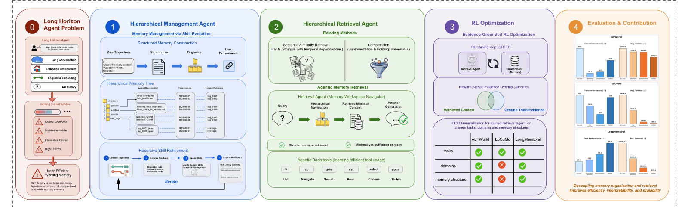
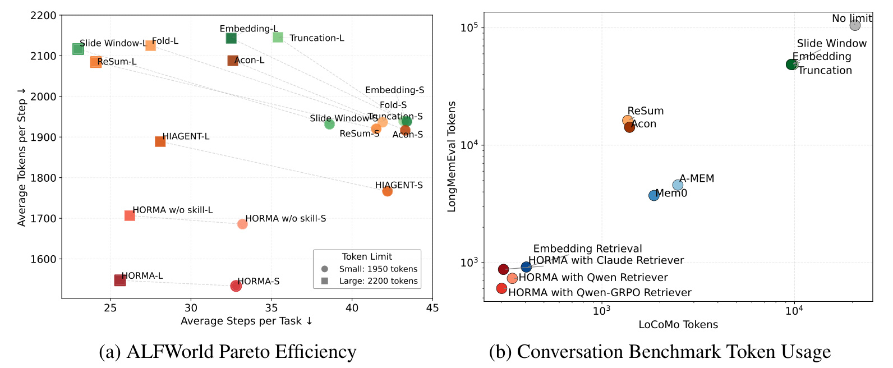
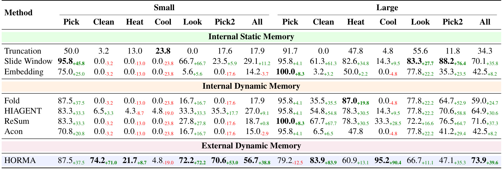
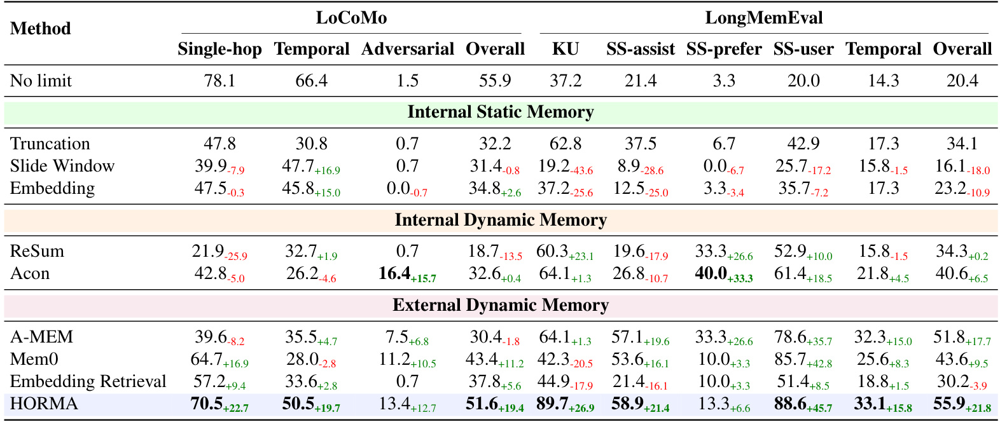
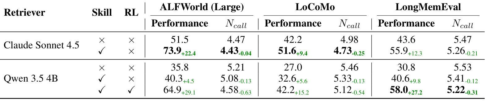
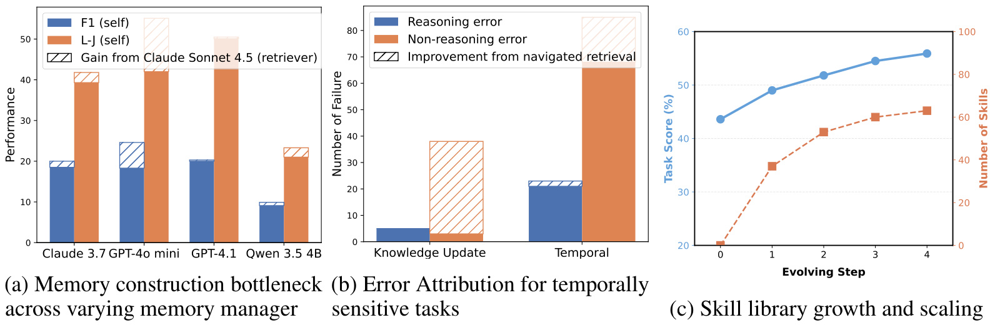

Organize then Retrieve: Hierarchical Memory Navigation for Efficient Agents
论文：Organize then Retrieve: Hierarchical Memory Navigation for Efficient Agents
作者：Hao-Lun Hsu, Nikki Lijing Kuang, Boyi Liu, Zhewei Yao, Yuxiong He
机构：一作来自 Duke University；合作机构为 Snowflake AI Research。本文目录按本轮候选事实包沿用“微软-HORMA”命名，但论文 PDF 首页标注的作者机构应以后者为准。
发布日期：2026-06-10
分类：cs.AI / cs.CL / cs.LG
论文链接：arXiv:2606.11680
代码/项目页状态：论文正文和首页未给出可核验的独立开源仓库或项目页，本轮不补造链接。
1. 背景和问题
HORMA 讨论的是长程 agent 的工作记忆问题。论文的出发点很直接：LLM agent 本身近似无状态，环境交互、对话轮次、工具调用结果、失败动作、用户偏好、时间戳和中间计划都必须通过输入上下文重新喂给模型；任务越长，历史越大，模型面对的不是“信息不够”，而是“信息太多但没有结构”。长上下文模型当然能推迟这个瓶颈，但不能消除它，因为费用、延迟、lost-in-the-middle、无关信息稀释和重复解析会同步增长。作者把这一点表述为 working memory 机制的需求：agent 需要一个既能保留可追溯细节、又能在执行路径上快速挑出最小充分上下文的外部记忆系统。
已有方向大致有两类。第一类把历史压缩进上下文，比如 summarization、context folding、trajectory compression、recurrent state。它们的优点是调用简单，缺点是不可逆：一旦把某段原始轨迹合并进摘要，后续问题如果恰好需要被压掉的细节，agent 很难恢复。第二类把记忆外置为条目集合，再用 embedding 或语义检索取回相关片段。它们解决了存储容量，却常把时间、因果、实体关系和任务状态压扁成“文本相似度”。在 ALFWorld 这类多步环境里，某个物体最后一次出现的位置、容器是否打开、动作失败是否重复，往往不是语义最相似的一段，而是结构上最应该沿路径追踪的一段；在 LoCoMo 和 LongMemEval 这类长对话任务里，用户说“上次提到的那个人后来如何”时，检索需要沿人物、日期、事件和原始轮次交叉定位，而不只是找和问题字面最接近的句子。
这篇论文的关键判断是：记忆构建和记忆检索不是同一个优化问题。构建决定外部记忆如何组织，影响往往滞后，失败原因也难归因；检索发生在每一步推理前，直接决定当前上下文质量，更适合用局部证据信号训练。许多 memory-RL 系统把“写什么、怎么组织、查什么、查多少”都放进端到端稀疏任务奖励里，任务失败后很难判断是 memory manager 没写对、retriever 没找对，还是主 agent 拿到正确证据后推理错了。HORMA 的标题“Organize then Retrieve”强调的就是这种解耦：先让一个管理器把经验组织成类似文件系统的层级结构，再让一个轻量检索 agent 在这个层级里导航，取回最少但足够的上下文。
论文最有价值的部分不只是“用层级目录存 memory”。层级目录只是外显界面，真正的设计在于三点。第一，每条摘要和原始轨迹之间保留 provenance，也就是压缩后的 notes 仍能回指 raw trajectory，避免“摘要好读但证据不可恢复”。第二，memory manager 不是一次性 prompt，而是通过对失败样本的 contrastive analysis 不断补充管理技能，形成外生技能和内生技能。第三，retriever 被训练成一个会用文件系统操作的导航 agent，而不是一个向量数据库查询器。它可以 ls、cd、grep、cat，也可以 select 某段内容或 done 结束检索；训练目标不是最大化下游任务成功率，而是最大化取回上下文和 ground-truth evidence 的重叠，同时避免冗余。
如果把这篇论文放在 agent memory 近期脉络里，它的定位更接近“把外部记忆做成可操作的工作区”，而不是提出新的长上下文压缩算子。作者用 ALFWorld 检验具身交互任务，用 LoCoMo 和 LongMemEval 检验长对话记忆，再用 token 使用量和 ablation 证明：HORMA 的收益不是简单来自更强 backbone 或更大上下文，而是来自“组织后的记忆结构 + 训练后的导航策略”组合。摘要中最抓人的数字是长对话任务里只需若干基线 token 用量的一小部分；正文 Figure 2 和 Table 2 展示了这种成本优势并没有完全以性能为代价。
需要先指出一个事实边界：PDF 首页机构标注为 Duke University 和 Snowflake AI Research，而当前任务目录名给定为“微软-HORMA”。因此笔记正文采用论文原文机构信息，目录名不反向作为论文事实。这个细节对论文内容没有影响，但对长期知识库很重要：模型名或目录名可以来自候选流程，作者和机构必须以 PDF 为准。
另一个背景边界是，HORMA 不是给模型新增长期参数记忆，而是给 agent 运行过程新增一个可维护的外部工作区。因此它评估的是“同一主模型拿到更合适上下文后能否更稳、更便宜地完成任务”，不是证明某个 backbone 本身推理能力提升。
2. 方法
2.1 从 M-MDP 到双模块工作记忆
论文先在 Preliminaries 里把长程任务写成一个主 agent 面对环境的决策过程。主 agent 是冻结参数的 LLM 策略，输入包括当前 observation、历史轨迹、自然语言 query 和主提示。原始形式可以理解为：
符号解释：$M_\theta$ 是冻结的主 LLM agent，$a_t$ 是第 $t$ 步动作，$o_t$ 是当前环境观察，$H_{t-1}$ 是之前所有观察与动作构成的交互历史，$q$ 是任务查询，$P_{main}$ 是环境说明、工具说明、输出格式和 few-shot 示例等固定提示。这个写法暴露了瓶颈：$q$ 和 $P_{main}$ 大体固定，但 $H_{t-1}$ 会随任务长度持续增长。只要上下文窗口 $W$ 有限，就必须截断、压缩或外置；即使 $W$ 足够大，解析整段历史也会带来成本和稀释。
HORMA 把这个问题改写成 memory-augmented MDP。外部记忆状态记为 $F_t$，它不是一串直接塞进 prompt 的 token，而是一组文件和目录。每一步交互后，记忆通过转移算子更新：
符号解释：$F_t$ 表示第 $t$ 步之前的外部工作区，$T_F$ 是根据动作和观察更新工作区的机制。论文的核心不是手写一个固定 $T_F$，而是用 memory manager $M_m$ 来执行这个转移，让它根据任务经验创建目录、写入摘要、维护实体或事件文件、保存 raw log 引用。
在执行时，主 agent 不再直接吃整个 $H_{t-1}$，而是先由检索模块从 $F_t$ 中选择上下文 $C_t$：
符号解释：$\pi$ 是 HORMA 增强后的整体策略，$M_r$ 是 retrieval agent，$C_t \subseteq F_t$ 是被选入当前 prompt 的上下文。这个公式表达了论文最重要的接口分离：$M_m$ 长期负责组织 $F_t$，$M_r$ 短期负责从 $F_t$ 中抽取 $C_t$，$M_\theta$ 只基于当前观察和取回证据行动。主模型不需要知道整段历史如何存储，也不承担在长上下文里自己“翻资料”的负担。
长对话任务是同一思想的静态版本。标准做法直接把完整对话历史 $H=(u_0,r_0,u_1,r_1,\ldots,u_T,r_T)$ 放入：
HORMA 则把长对话先整理到外部记忆 $F$，回答时只取回 $C$：
符号解释：$u_i$ 和 $r_i$ 分别表示用户轮次和助手轮次，$a$ 是最终答案，$C$ 是为当前问题选出的证据上下文。这个推广说明 HORMA 不是只适用于 ALFWorld 式在线环境；只要任务的历史可以被组织成文件工作区，检索就能从“读完整对话”变成“沿结构定位证据”。

Figure 1 是整篇论文的方法地图。左侧第 0 部分把长程 agent 的问题压缩成四个风险：context overhead、lost-in-the-middle、information dilution 和 high latency；这不是普通的“上下文太长”，而是执行路径上每一步都要重新携带、解析和排序历史。中间第 1 部分展示 hierarchical management agent：raw trajectory 先被归档，再被 summarize 和 organize 成 notes、entities、events、raw_logs 等路径，摘要节点保留 timestamps 和 linked evidence。这里的层级文件系统不是装饰，它让后续 retrieval 可以先看目录、再看摘要、最后必要时回到 raw trajectory。第 2 部分展示 retrieval agent：它不做一次 embedding top-k，而是像人在终端里查资料一样 list、navigate、search、read、choose、finish。右侧第 3 部分把训练信号落到 evidence overlap，说明 RL 优化对象是“取回证据是否贴近 ground truth”，而不是把全部 agent 成功失败混成稀疏奖励。第 4 部分强调 evaluation & contribution：同一套解耦结构要在 ALFWorld、LoCoMo、LongMemEval 上泛化，且评价不仅看任务分数，还看 token 和步骤成本。
2.2 文件系统式工作区与 provenance
HORMA 的 grounded workspace 选择文件系统形式，而不是向量库或隐藏状态。这个选择有两个含义。第一，记忆对象天然有层级：人物、事件、地点、任务阶段、工具调用、原始轨迹、错误记录，可以放在不同目录下。第二，操作是可解释的：mkdir、mv、grep、cat、nano 这类命令会留下明确的路径和内容变化，retriever 选择了哪些文件、为什么读到某条证据，都比黑盒 attention 或向量相似度更容易审计。
论文对每个 interaction 或 dialogue turn 的处理是：memory manager 先把 raw trajectory 归档到带时间戳的目录，再按任务相关性生成结构化 notes。一个好的 note 不是单纯摘要，而是包含三类信息：压缩后的任务相关事实、时间或轮次元数据、指向原始轨迹的引用。这样做的价值在长程任务里很明显。假设 ALFWorld 中 agent 曾经在某个 cabinet 看到 mug，但后来经历了二十步无关动作；flat memory 可能只存一句相似度不高的 observation，或者 summary 把位置细节丢掉。HORMA 期望 memory manager 写出类似“object identity chain”和“receptacle state”的结构节点，并能在需要时回到 raw log 验证。
provenance 也是它区别于纯 summarization 的地方。摘要能减少上下文，但摘要一旦错了或漏了，就会把错误固化。HORMA 的摘要节点链接 raw trajectory，相当于把压缩和可恢复性分离：平时检索看 note，遇到不确定的任务状态再展开 raw log。这种设计对时间敏感问题尤其重要。LoCoMo 的用户可能在不同 session 里多次提到同一个人，日期表达还可能是“昨天”“下周”。如果只保留一个全局 summary，时间锚点很容易混；如果按日期、人物、事件分层并保留原始 turns，retriever 可以先定位人名或事件，再用 raw evidence 修正相对时间。
不过，层级工作区也把难题前移给了 memory manager：目录怎么命名、何时拆分文件、何时合并实体、怎样记录 negative evidence、哪些 raw trajectory 应该挂在多个路径下，这些都不是固定规则能完全覆盖的。因此 HORMA 没有把 $T_F$ 写成一套手工 heuristic，而是引入下一节的 recursive skill refinement，让 memory manager 从失败差异中学会新的组织原则。
2.3 记忆管理器的 recursive skill refinement
memory manager $M_m$ 的任务是把 raw experience 变成可导航的结构。作者认为这件事不适合直接用任务级 RL 来训练，因为 memory construction 的效果是延迟的：今天写错一个 entity note，可能十步之后才导致失败；任务失败时也无法知道是 note 写少了、写错了、路径放错了，还是 retriever 没查到。因此论文把 memory construction 当成 structure induction，并利用 frontier LLM 的层级抽象能力，用 prompt 和技能库驱动它。
初始 memory-manager prompt $P_m^{(0)}$ 包含领域无关原则，例如实体跟踪、事件抽象、关系分组、时间戳记录。随后系统比较两种执行结果：用 raw history $H$ 的 unconstrained baseline，以及用 managed context $H'$ 的 HORMA。根据二者相对成败，作者定义两类 contrastive 子集。外生集合 $D_{exo}$ 是 raw history 成功但 managed context 失败的任务，说明 memory construction 可能丢失了必要信息；内生集合 $D_{end}$ 是 managed context 成功但 raw history 失败的任务，说明结构化记忆过滤噪声、缓解幻觉或 lost-in-the-middle 起到了作用。
每个任务会生成自然语言反馈：
符号解释：$Feedback_i$ 是第 $i$ 个任务的对比反馈，输入包括反馈指令、原始历史 $H$ 和管理后上下文 $H'$。它不是直接更新参数，而是把“为什么失败或为什么成功”写成可读规则。例如 appendix 中的 ALFWorld 技能会提醒 memory manager 在发现目标物体后立刻写 exact location，或者在多次出现 Nothing happens 时记录 failed-action loop；LoCoMo 技能会强调精确日期、相对时间换算、negative evidence 和多路径索引。
反馈再被聚合进下一轮 memory-manager prompt：
符号解释：$P_m^{(k)}$ 是第 $k$ 轮 memory-manager prompt，${Feedback_i}_{i=1}^{n}$ 是本轮任务反馈集合，$P_m^{(k+1)}$ 是加入新技能后的提示。论文把这个过程类比 textual gradient descent，因为它不更新模型参数，而是用语言规则逐轮改变系统行为。内生技能告诉管理器哪些结构化策略会帮助推理，外生技能告诉管理器哪些信息不能被过度压缩或遗漏。
这一步的设计很务实。它承认“如何组织 memory”依赖任务域：ALFWorld 关心 object、receptacle、action failure；LoCoMo 关心人物、日期、会话、相对时间；LongMemEval 关心长期互动事实和未提及信息。与其为每个 benchmark 手写规则，HORMA 让管理器从 contrastive trajectories 中抽取技能。代价是技能质量仍依赖强 LLM 的反馈能力，且 prompt 库的增长是否会引入冲突，需要后续系统工程处理。论文用 Figure 3c 展示技能数量随 refine step 增长，任务分数同步上升，但这还不是严格证明“每条技能都正确且无冲突”，更像是对方向有效性的经验支持。
2.4 导航式检索 agent 与 grounded action space
检索模块 $M_r$ 是 HORMA 的另一半。它面对的是已经组织好的 workspace $F_t$，目标是在当前 query 下构造 $C_t$。传统 embedding retrieval 的动作空间很窄：把 query 向量化，取 top-k 片段，最多再 rerank。HORMA 把检索改成文件系统导航：retriever 可以查看目录、切换路径、搜索关键词、读取文件，也可以把某段内容 select 进上下文，最后 done 结束。这种 action space 更接近人类使用外部笔记查证据的方式。
论文给出的 grounded action space 包括常见 Bash 工具，例如 ls、grep、cd、cat，以及 select 和 done 两个终止类动作。ls 用于看目录结构，cd 用于进入候选路径，grep 用于按关键词或实体搜索，cat 用于读取文件内容，select 用于把确定相关的内容加入 $C_t$，done 表示上下文足够。这个设计有一个隐含约束：workspace 必须可读、可导航、文件名和 note 内容必须足够语义化，否则 retriever 即使会用工具，也会被糟糕结构拖累。因此 HORMA 的两个模块并非完全独立，而是通过共享文件系统接口耦合：管理器提供可导航结构，检索器提供执行路径上的精确选择。
导航式检索的优势在时间和因果任务上尤其明显。假设问题问“Alice 搬去 Seattle 后第一次提到的票务安排是什么”，embedding top-k 可能找出所有 Seattle 或 ticket 相关句子，却不一定按日期顺序恢复事件链。导航 agent 可以先进入 people/Alice，再看 events 或 raw_logs 里的 timestamp，必要时 grep Seattle，最后 select 带来源的 note。这个过程比一次 top-k 慢一些，但比把完整对话塞进主 agent 便宜得多，也比无结构检索更可控。
HORMA 还强调 retrieval 是 critical execution path 上的模块，所以需要轻量。论文主实验中很多对比使用 Claude Sonnet 4.5 作为主 agent、memory manager 和 retriever；但 ablation 里也训练 Qwen 3.5 4B 作为检索 agent，并用 GRPO 提升其性能。这个选择体现了作者的系统目标：复杂抽象可以交给强模型做离线或低频 memory construction，实时检索最好由更小、更便宜的 agent 完成。只要 reward 能提供足够清晰的局部反馈，小模型就可能学会在层级工作区里高效导航。
2.5 证据重叠奖励与 GRPO 训练
检索 agent 的训练目标是 evidence-grounded retrieval reward。论文不用最终任务成功率作为主要训练信号，而是比较选出的上下文 $C_t$ 与 ground-truth evidence $E$ 的重叠：
符号解释：$C_t$ 是 retriever 选择进 prompt 的上下文集合，$E$ 是该任务或问题对应的真实证据集合，$J$ 是二者的 Jaccard overlap。分子奖励取回正确证据，分母惩罚把无关内容也塞进上下文。因此这个 reward 同时施加“相关”和“紧凑”两种压力。若 retriever 只选一小段但漏掉关键证据，分子小；若把许多无关文件都 select，分母大。它比 task reward 更局部，因为它评价的是检索质量，而不是主 agent 后续是否推理成功。
作者用 GRPO 训练 retrieval policy。GRPO 的作用是让模型在多条 rollout 或候选行为之间比较相对好坏，而不必为每一步设计人工 dense reward。对 HORMA 来说，rollout 是一串文件系统操作：看目录、搜索、读取、选择、结束。训练过程鼓励 agent 学会一些具体策略：先粗看目录再进入语义相关路径；grep 时优先查实体、日期、任务物体或失败动作；读到摘要不够时再回 raw trajectory；发现无关路径后停止扩大上下文；在证据足够时尽早 done。
这套训练把 credit assignment 问题缩小了。如果下游回答错了，但 $C_t$ 与 $E$ 高度重叠，那么问题可能在主 agent 的 reasoning；如果 $C_t$ 与 $E$ 重叠低，才说明 retriever 需要改进。相反，端到端 memory RL 只看到最终任务成功或失败，很难区分 construction、retrieval 和 reasoning 的责任。HORMA 的 reward 不完美，因为它需要 benchmark 中可定义的 ground-truth evidence，真实开放任务未必容易标注；但在 ALFWorld、LoCoMo、LongMemEval 这类评测里，这个信号足以训练导航行为并验证模块解耦的收益。
整体看，HORMA 的方法链条是：先把 agent 历史外置为有 provenance 的层级文件系统；再用 recursive skill refinement 改进 memory manager 如何写和组织；最后把检索训练成一个轻量文件导航策略，用 evidence overlap 提供局部监督。它不是把所有信息压得更短，而是把“长期组织”和“即时取证”拆开，让主 agent 每一步只看到当前最需要的证据。
3. 实验结果
3.1 先看效率-性能前沿
实验覆盖三个 benchmark。ALFWorld 是文本具身交互环境，论文评估 134 个 out-of-distribution 任务，包含 Pick & Place、Clean、Heat、Cool、Look、Pick2 六类；LoCoMo 是多 session 长对话记忆评测，本文从 3 个 conversation 抽取 519 个 QA 实例，并使用其余 7 个 conversation 训练轻量 retriever；LongMemEval 用 367 个实例测试长期交互记忆和跨域泛化。主结果中，主 agent、memory manager 和 retriever 默认使用 Claude Sonnet 4.5，后续 ablation 再看 Qwen 3.5 4B retriever 与 GRPO 的影响。

Figure 2 是理解实验的第一张图。左图把 ALFWorld 的平均交互步数和每步 token 放在同一坐标系里，越靠左表示任务步数少，越靠下表示上下文成本低；HORMA-S 和 HORMA-L 都位于更低 token 区域，且不需要像某些 baseline 那样用高 token 换取步骤减少。右图把 LoCoMo 和 LongMemEval 的输入 token 用对数坐标展示，可以看到 sliding window、embedding、truncation 接近完整上下文数量级，而 HORMA with Qwen-GRPO Retriever 落在最低 token 区域。这里最重要的读法不是“某个点绝对最好”，而是 HORMA 把工作点从“读很多历史”迁移到“读少量结构化证据”。如果只看分数，长上下文 no limit 可能仍有吸引力；如果把在线 agent 的延迟和价格算进去，这张图说明外部结构化记忆可以改变成本曲线。
3.2 ALFWorld：具身任务里的成功率
ALFWorld 的价值在于它不是静态问答。agent 需要连续执行动作，环境反馈会改变任务状态，错误动作可能导致循环。Table 1 按 Small 和 Large 两种上下文预算列出六类任务成功率。Small 限制下，HORMA 的 All 成功率为 56.7，相比多种 internal static 或 dynamic memory baseline 有明显提升；Large 限制下，HORMA 的 All 为 73.9，也高于 sliding window、embedding、fold、HIAGENT、ReSum 和 Acon 等方法。更细看类别，HORMA 在 Clean、Cool、Look、Pick2 等任务上有强提升，但在 Large 的 Pick 上低于部分 baseline，说明它并不是每个任务类型都单调占优。

Table 1 的细节很值得读。Small 预算下，truncation 和 sliding window 在某些类别能保留近期动作，但对跨步骤依赖弱；embedding 在 Pick 上尚可，却在 Clean、Heat、Pick2 上容易漏掉环境状态。HORMA 的优势来自它能把 object identity、receptacle state、failed actions 和中间目标写成可查路径。比如 Clean 或 Pick2 任务常需要记住“第一个对象已找到、第二个对象在哪、容器是否打开、之前哪个动作失败”，这些不是单句语义相似度能稳定解决的。Large 预算下所有方法可见历史更多，但 HORMA 仍有优势，说明层级组织不仅弥补小上下文，还能减少大上下文里的无关信息干扰。表中 Pick 类 Large 条件下 HORMA 低于 truncation/slide/embedding，也提示方法对任务类别敏感：若任务主要依赖近期可见线索，结构化检索未必比简单保留最近上下文更稳。
3.3 LoCoMo 与 LongMemEval：长对话记忆
长对话结果是论文标题中“Retrieve”的核心证据。LoCoMo 和 LongMemEval 的上下文很长，作者设置 LoCoMo 10K input token limit、LongMemEval 50K input token limit，考察模型在严格预算下能否回答跨 session、跨人物、跨时间的问题。Table 2 采用 L-J scores，按 LoCoMo 的 Single-hop、Temporal、Adversarial、Overall，以及 LongMemEval 的 KU、SS-assist、SS-prefer、SS-user、Temporal、Overall 展示。

Table 2 显示 HORMA 在 LoCoMo Overall 达到 51.6，在 LongMemEval Overall 达到 55.9，并在 LongMemEval 的 KU、SS-user、Temporal 等列有突出增益。更重要的是，这些结果是在远低于完整上下文的 token 使用下取得的。摘要中提到，在长对话任务中 HORMA 至多使用若干 baseline token 的 22.17%，LongMemEval 上甚至有 1.24% 到 16.19% 的区间。结合 Figure 2 右图，这说明 HORMA 的检索不是“把更多材料塞进去再让主模型筛”，而是把记忆结构提前整理，使 retriever 可以按实体、时间和事件路径拿到较少但更相关的证据。对 Temporal 类问题，结构化时间锚点尤其关键；对 SS-user 这类用户状态或偏好相关问题，多路径索引和 negative evidence 也能减少“没检到就当没有”的错误。
不过表格也显示 HORMA 不是每一列都最高。例如 LoCoMo Adversarial 下 Acon 有更高数值，LongMemEval SS-prefer 中 Acon 也很强。这意味着 HORMA 的优势更集中在需要长期结构和证据导航的场景，而不是所有问答子类型。论文的贡献因此应被理解为更好的效率-性能折中和跨域泛化，而不是在每个 metric 上绝对统治。
3.4 消融：skill 与 RL 各自贡献
Table 3 回答一个关键问题：HORMA 的收益到底来自 memory-management skill，还是来自 RL-trained retriever？表中有 Claude Sonnet 4.5 retriever 和 Qwen 3.5 4B retriever 两组。Claude 组从无 skill 到有 skill，ALFWorld Large performance 从 51.5 提升到 73.9，LoCoMo 从 42.2 到 51.6，LongMemEval 从 43.6 到 55.9，同时调用次数略降。这说明高质量 memory construction skills 本身就能显著提高结构化记忆质量。

Qwen 组更能体现 RL 的价值。Qwen 3.5 4B 在无 skill、无 RL 时性能较低；加入 skill 后有提升，但加入 skill 和 RL 后，ALFWorld Large 提升到 64.9，LoCoMo 到 42.2，LongMemEval 到 58.0，且 Ncall 下降。这说明一个小 retriever 若只靠基础能力在文件系统里导航，效果有限；有了更好的 workspace 技能和 evidence reward 训练后，它能学会更有效地选择路径和停止检索。这个结果对工程落地很重要：如果线上每一步都用强模型做 retrieval，成本会被转移而非消除；若能用小模型承担导航，HORMA 才更接近可部署的 working memory 系统。
表里还可以看到 skill 和 RL 的分工。skill 改善的是记忆被写成什么样，影响所有 retriever；RL 改善的是如何在已写好的结构中找证据，尤其影响小模型。两者相乘时收益最大。反过来，如果 memory manager 写出的目录混乱，RL retriever 也只能在坏索引里搜索；如果 retriever 不会导航，好的 note 也不会进入主 agent prompt。
3.5 可靠性分析与 skill library 增长
Figure 3 给出机制层面的解释。左图比较不同 memory manager 下，替换为更强 Claude retriever 带来的 gain。若换强 retriever 后提升很大，说明原 retriever 是瓶颈；若提升有限，则管理器构建出的 memory 本身可能限制了上限。中图把错误分成 reasoning error 和 non-reasoning error，后者包括时间过期、无关检索等检索问题。右图展示 skill library 从 0 到 4 个 refine step 的增长，任务分数随技能数量上升。

这张图帮助解释为什么 HORMA 要解耦。左图说明 memory construction 和 retrieval 之间确实存在瓶颈传递：结构写得差时，强 retriever 也只能有限补救；结构可用但检索弱时，换更强 retriever 会带来明显提升。中图显示 navigated retrieval 主要减少的是 non-reasoning error，而不是让主 agent 本身更会推理。这与 reward 设计一致：证据重叠奖励优化的是取证质量，主模型 reasoning 能力基本保持不变。右图则支持 recursive skill refinement 的经验有效性：随着技能库增长，task score 上升，说明 append 到 memory-manager prompt 的规则并非纯噪声。appendix 里的 ALFWorld、LoCoMo、LongMemEval 技能示例也显示这些规则很具体，例如目标物体空间定位、失败动作循环检测、时间精确锚定、negative evidence handling、多路径索引和 retrieval coverage diagnostics。
实验总体支持三条结论。第一，层级结构加 provenance 能让外部记忆比 flat retrieval 更适合长程任务。第二，retriever 的导航策略可以用局部证据 reward 训练，减少端到端任务奖励的 credit assignment 问题。第三，方法的效率收益很大，尤其在长对话任务中，token 用量降幅比性能提升更醒目。剩下的疑问主要在开放环境：ground-truth evidence 如何获得、技能库如何防冲突、文件系统工作区如何扩展到多用户和持续在线 agent、以及不同主模型能力变化时 memory manager 是否仍稳定。
4. 总结
HORMA 的核心贡献是把 agent working memory 拆成两个节奏不同的系统：低频、长期、结构化的 memory construction；高频、执行路径上的 navigation retrieval。前者用文件系统式层级工作区和 recursive skill refinement 改善记忆组织，后者用 Bash-like action space 和 evidence-overlap reward 训练小型检索 agent。这个拆法比“继续扩大上下文”更接近长期 agent 的工程需求，因为它把可追溯存储、局部检索、成本控制和错误归因放在同一个框架里。
我对这篇论文的判断是：它的最大价值在系统分层，而不是某个单独公式。Jaccard reward 本身很简单，文件系统接口也不新，但二者和 memory skill evolution 组合在一起，形成了一个可以审计、可以训练、可以降成本的 memory pipeline。对需要长时间运行的客服 agent、研究助理、个人助理、网页任务 agent 或内部工具 agent，这种“摘要节点链接 raw evidence，检索 agent 用工具导航”的模式比纯 embedding memory 更容易解释和调试。
主要限制有四点。第一，训练 retriever 依赖 ground-truth evidence，真实生产任务里未必能自动得到高质量证据集合。第二，memory manager 的 skill refinement 依赖强 LLM 做对比分析，技能库可能累积冲突或过拟合 benchmark。第三，文件系统接口可解释但不一定最高效，目录规模变大后需要缓存、权限、并发写入和索引维护策略。第四，实验主要验证三类 benchmark，尚未覆盖多用户长期在线、持续遗忘、隐私删除、恶意记忆污染等生产问题。
后续值得跟进三件事。第一，把 evidence reward 扩展到弱监督场景，例如用 answer citation、human feedback 或日志回放近似 $E$。第二，研究 skill library 的版本控制和冲突检测，避免 memory manager prompt 越改越长、规则互相覆盖。第三，把 HORMA 与现有向量检索结合：层级导航负责粗定位和 provenance，embedding 负责目录内细粒度召回，可能比二选一更稳。若未来作者开源 workspace 格式、训练脚本或更多真实任务日志，这篇论文会更适合作为长期 agent memory 系统的复现实验起点。